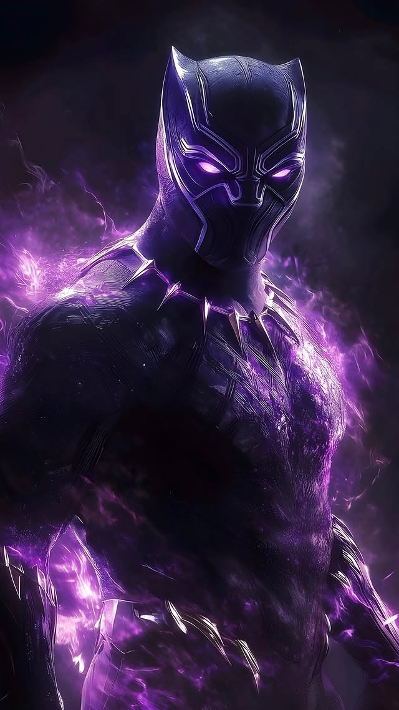
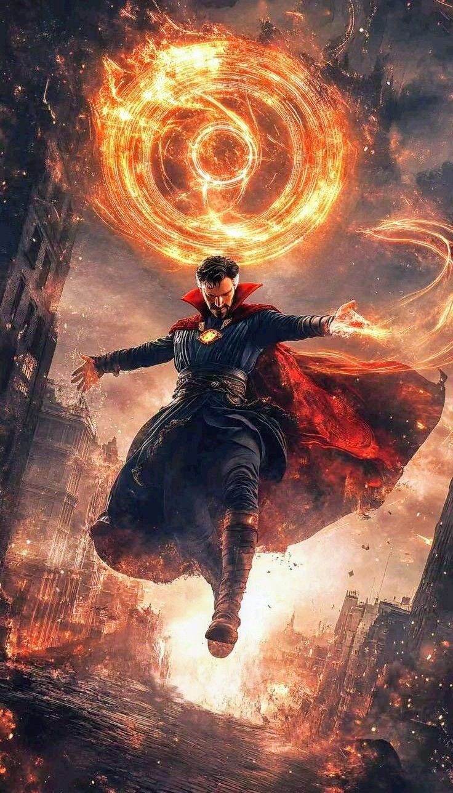
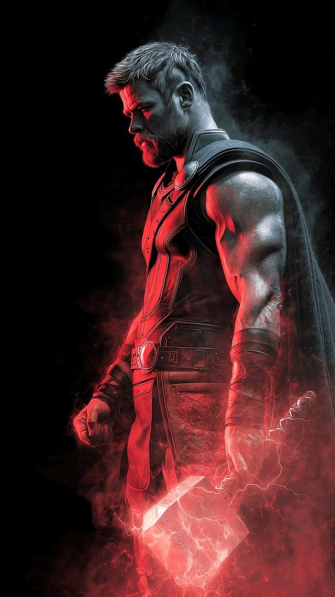
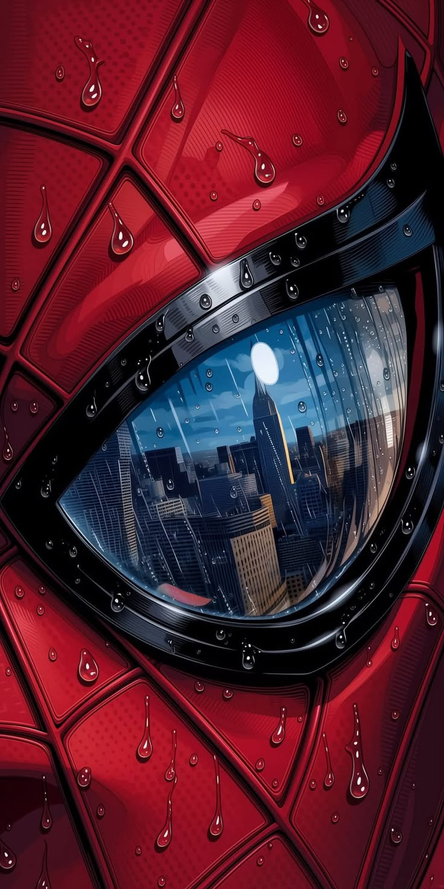

UPSC DOOMSDAY
Fill the gap in your Mains preparation
UPSC Mains GS + Optional PYQs — smartly segregated by subject, paper, topic and year, with instant QCAB generation for answer-writing practice.

Answer writing should not be
the part we keep postponing.
The challenge is having the right questions, in the right format, at the right stage of preparation.
We tend to postpone answer writing
Answer writing often gets pushed aside because we do not have properly curated questions relevant to our stage of preparation.
We do not have an easy QCAB format
Without a convenient QCAB format, creating question sets and practicing regularly becomes difficult.
Preparation is fragmented away from PYQs
PYQs and answer-writing practice often remain separate, instead of being part of the same workflow.

One place for PYQs.
One place to practice.
UPSC Doomsday brings PYQs and answer-writing practice together in one workflow.
Meet UPSC Doomsday
Find UPSC PYQs by subject, paper, topic and year, then turn them into QCABs ready for practice.
Most aspirants study. Far fewer actually write.
Only 20% of UPSC Mains aspirants actively practice writing tests or mock answers during their preparation.

Three steps. Simple process.
Select questions. Generate your QCAB. Start writing
Create free account
Explore PYQs by subject, paper, topic or year.
Generate your QCAB
Generate your QCAB instantly, ready for practice.
Write Write Write
Practice answering PYQs in an exam-oriented format.
UPSC Mains PYQs, organised for answer-writing practice.
UPSC Doomsday is built around a simple preparation workflow: find the right Previous Year Questions, organise them by subject, paper, topic and year, and turn them into a Question-Cum-Answer Booklet (QCAB) for focused answer-writing practice.
Practise UPSC Mains Previous Year Questions (PYQs) across General Studies and Anthropology Optional. Questions are organised to help you move from syllabus-based revision to structured answer-writing practice.
Explore UPSC Anthropology PYQs and UPSC GS Paper 1, GS Paper 2 and GS Paper 3 PYQs. You can also use the customizable QCAB tool to create question sets for your own answer-writing sessions.
Start with Anthropology Optional PYQs, browse General Studies PYQs, or create a custom UPSC QCAB. These resources are designed to make topic-wise PYQ practice and answer writing easier to organise.


Choose your battlefield.
Explore UPSC Mains Previous Year Questions for Anthropology and General Studies, or create customizable QCABs for answer-writing practice.